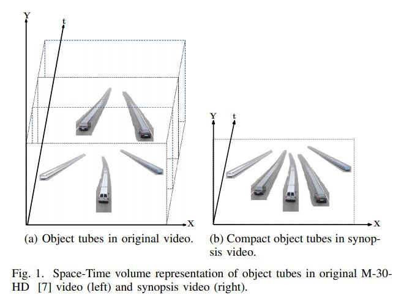
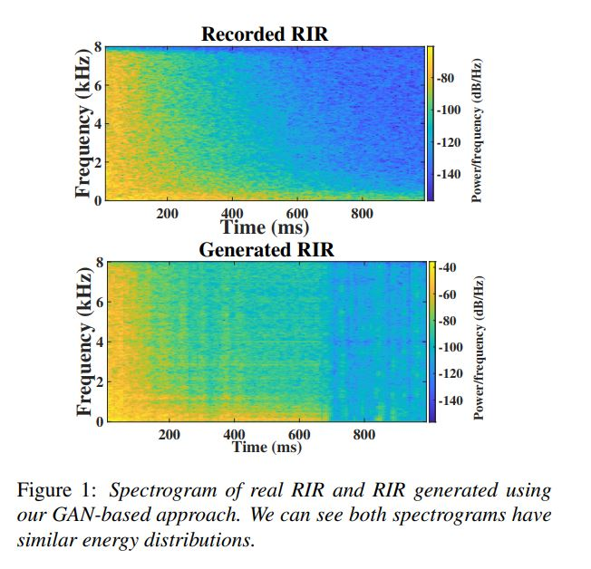
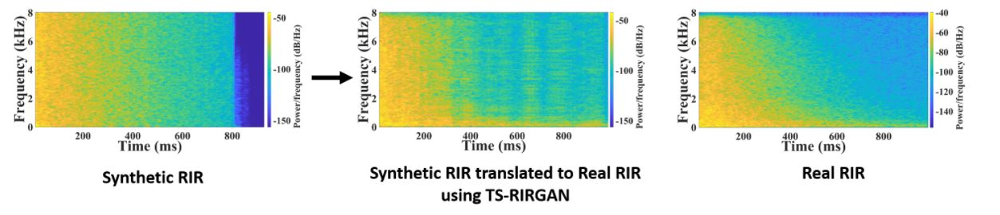
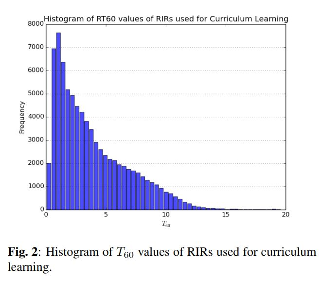
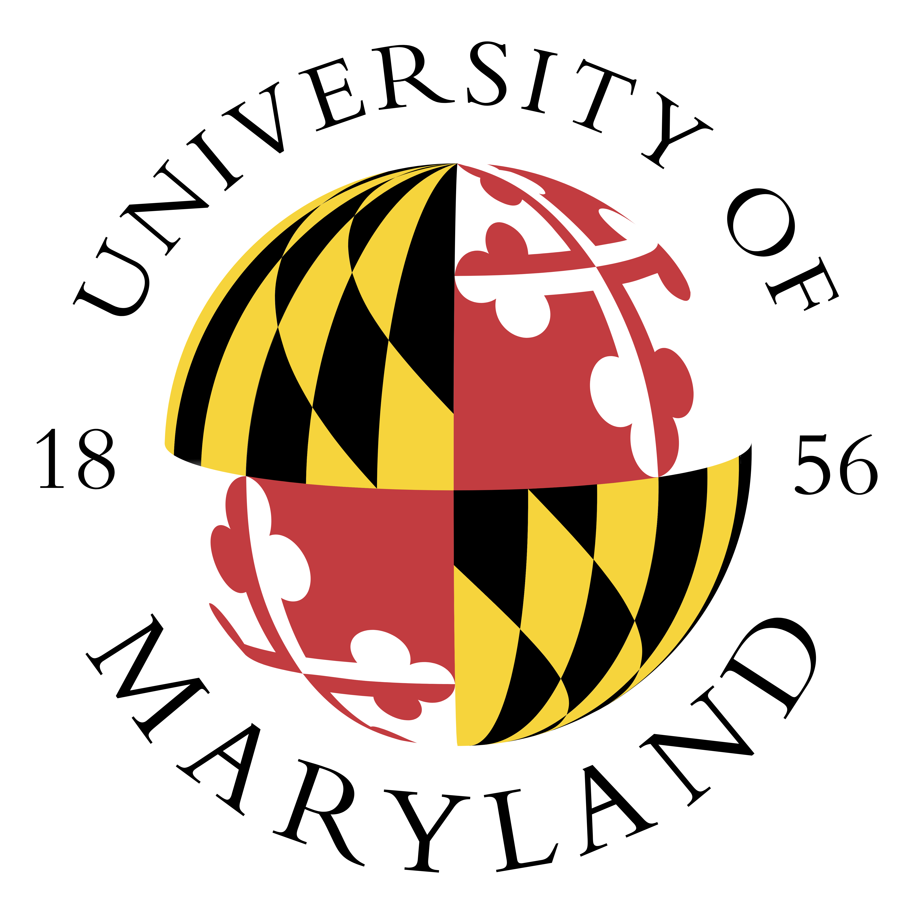

Anton Jeran Ratnarajah
I am a thrid year PhD student in Electrical and Computer Engineering at the University of Maryland-College Park . I am a member of GAMMA Lab supervised my Professor Dinesh Manocha . I am broadly interested in acoustic simulations and far-field speech augmentation . My previous research involves Computer Vision ( Video Summarization , Forensic Detection ) and Speech Processing ( Automatic Speech Recognition )

Research
|  |
Moving Object Based Collision-Free Video Synopsis |
|  |
IR-GAN: Room impulse response generator for far-field speech recognition |
|  |
TS-RIR: Translated synthetic room impulse responses for speech augmentation |
|  |
IMPROVING REVERBERANT SPEECH SEPARATION WITH MULTI-STAGE TRAINING AND CURRICULUM LEARNING |
Education
|
University of Moratuwa, Moratuwa, Sri Lanka |
|
|  |
University of Maryland - College Park, College Park, MD, USA |
Work Experience
 |
Research Intern |
|
Engineer |
|
|
Research Intern |
Teaching Experience
|
ENEE 425: Digital Signal Processing |